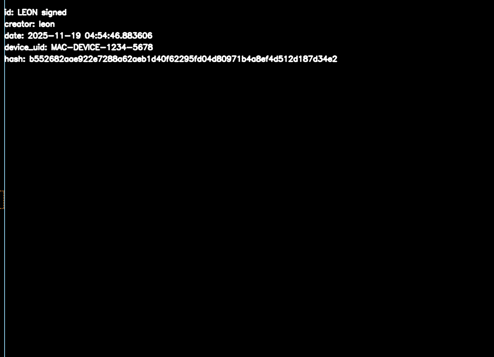

Pipeline Overview
This demo visualizes how the encoder embeds an invisible watermark and how the decoder reveals it again.
Original
Invisible Marked
Visible Marker

Features
- Mid‑frequency DCT embedding
- Invisible structured noise pattern
- Robust against cropping, compression, resizing
- Survives filters, screenshots & recordings
- Decoder heatmap reveals the fingerprint